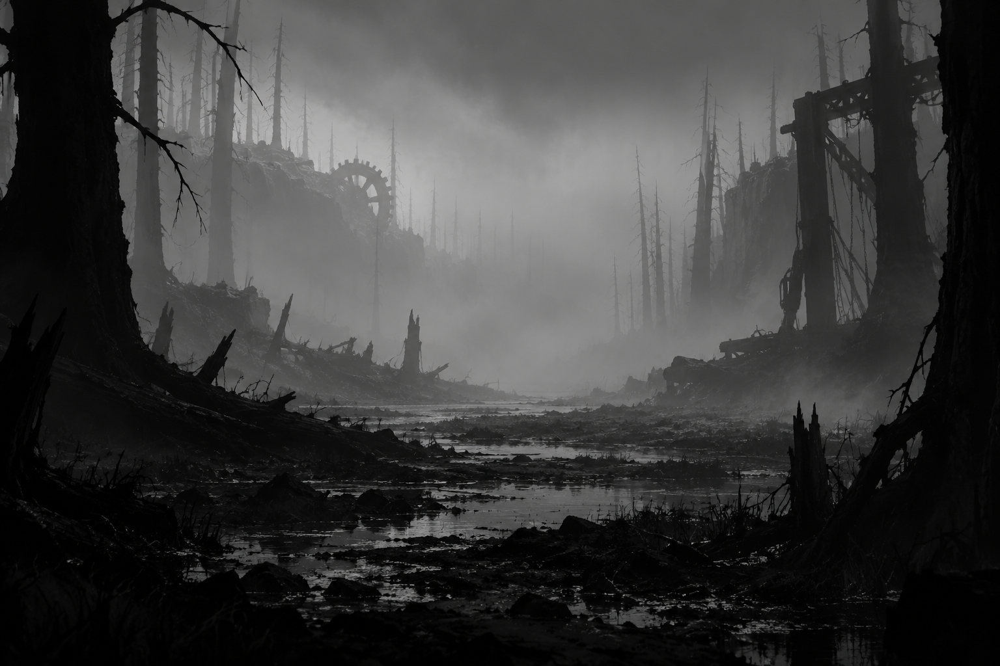

01 · PAUSE
Pause veil
PAUSED
The scene remains visible.
Pause surface is open in this specimen.
LIMBO · ORIGINAL DIRECTION STUDY
Three small interface fragments for a low-UI game. Each control changes only this local specimen.

01 · PAUSE
PAUSED
The scene remains visible.
Pause surface is open in this specimen.
02 · CHAPTERS
Choosing a marker only previews a destination.
03 · CONTEXT HINT
One contextual action; no permanent control legend.